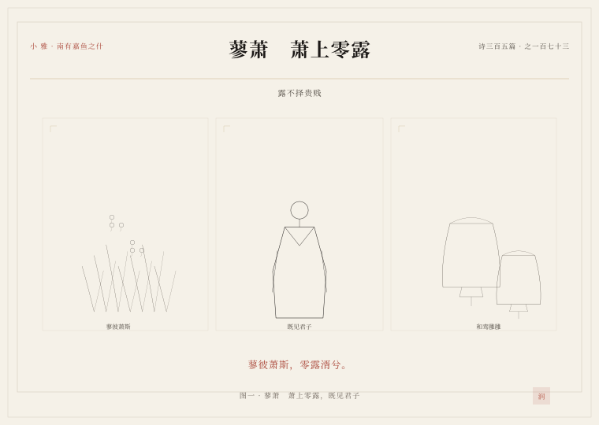
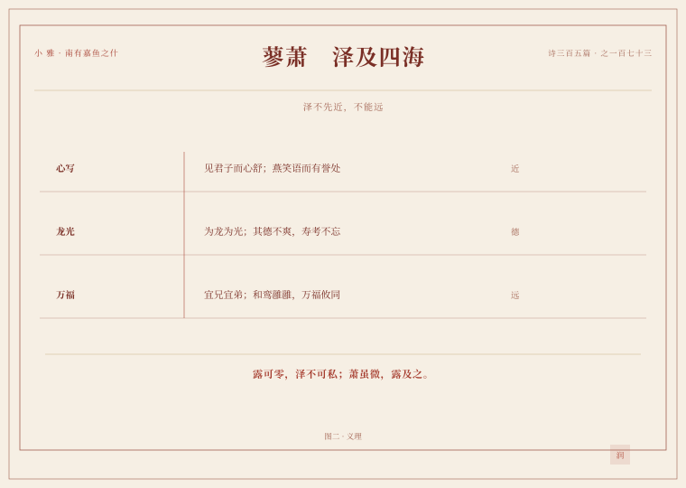

第一百七十三篇 蓼萧
小雅 · 南有嘉鱼之什 SJ173
朗读 · 普通话
依经文原文朗读，章次不读出；配古琴底乐，不改速、不加拖腔。全库同一音色（豆包 TTS），非播音员录制。
一 解题
诗三判：
- 谁在说：见君子而受燕之人。见蓼萧之上零露，既见君子，心写、笑语、誉处。
- 说什么事：四章。每章以「蓼彼萧斯，零露某兮」起；由「心写」而「为龙为光」，由「宜兄宜弟」而「万福攸同」。
- 为何编在此：南山有台颂得贤，蓼萧颂泽及；得贤于朝，泽及于野。
小雅由邦基入四海。
《毛序》：「《蓼萧》，泽及四海也。」
朱子《诗集传》：「兴也。蓼，长大貌。萧，蒿也。湑，清也。写，输写也。誉，声名。处，安处也。」二章：「瀼瀼，露盛貌。龙，宠也。光，光荣也。爽，差也。」三章：「泥泥，露濡貌。岂弟，乐易也。」四章：「浓浓，厚貌。鞗革，辔首也。忡忡，垂貌。和鸾，铃也。雝雝，和声。」
本库的看法：《蓼萧》不是一首颂君的诗，是一首「以露喻泽」的诗。
萧是蒿，贱草；露零其上，不择贵贱。泽及四海，正从不择贵贱处见。
一章「我心写」，是见君子而心舒；二章「为龙为光」，是德之照；三章「宜兄宜弟」，是泽之近；四章「万福攸同」，是泽之远。须辨：蓼是长大，不是蓼草；萧是蒿，不是萧国；湑是清，不是湑酒；写是输写、舒畅，不是书写；龙是宠，不是龙蛇。断语：露可零，泽不可私；萧虽微，露及之。
先辨五事：「蓼」是长大貌，不是蓼草；「萧」是蒿，不是萧国；「湑」是清，不是湑酒；「写」是输写、舒畅，不是书写；「龙」是宠，不是龙蛇。
二 经文
第一章
蓼彼萧斯，零露湑兮。既见君子，我心写兮。
燕笑语兮，是以有誉处兮。
第二章
蓼彼萧斯，零露瀼瀼。既见君子，为龙为光。
其德不爽，寿考不忘。
第三章
蓼彼萧斯，零露泥泥。既见君子，孔燕岂弟。
宜兄宜弟，令德寿岂。
第四章
蓼彼萧斯，零露浓浓。既见君子，鞗革忡忡。
和鸾雝雝，万福攸同。
三 韵读
- 一章：萧、湑、写、语、处，鱼部相叶。声舒。
- 二章：萧、瀼、光、爽、忘，阳部相叶。声亮。
- 三章：萧、泥、弟、弟、岂，脂、微相叶。声亲。
- 四章：萧、浓、忡、雝、同，冬部相叶。声和。
读法：四章同以「蓼彼萧斯」起，露由「湑」而「瀼瀼」而「泥泥」而「浓浓」，一层厚一层。露愈厚，泽愈深；泽愈深，声愈和。
四 字义与名物
- 蓼：长大貌。萧：蒿。零露：落露。湑：清。君子：所见之君。写：输写、舒畅。燕笑语：宴饮笑语。誉处：声誉与安处。
- 瀼瀼：露盛。为龙为光：得宠为荣。爽：差。寿考：长寿。
- 泥泥：露濡。孔燕：甚宴。岂弟：和乐平易。宜兄宜弟：兄弟相宜。令德：美德。寿岂：寿而乐。
- 浓浓：露厚。鞗革：辔首。忡忡：垂貌。和鸾：车上铃。雝雝：和声。攸同：所同。
五 今译
一章：长大的萧蒿，露珠清清。既见君子，我心舒畅。宴饮笑语，因此有声誉安处。
二章：长大的萧蒿，露珠盛盛。既见君子，得宠为荣。其德不差，长寿不忘。
三章：长大的萧蒿，露珠濡濡。既见君子，甚宴和乐。宜兄宜弟，美德寿乐。
四章：长大的萧蒿，露珠浓浓。既见君子，辔首垂垂。和鸾雝雝，万福同归。
六 章旨
- 一章：萧露湑，是「泽初及」；心写，是「受泽者舒」；泽及，则心不郁。
- 二章：萧露瀼，是「泽渐厚」；为龙为光，是「德之照」；宠光非私，是德不爽。
- 三章：萧露泥，是「泽浸润」；宜兄宜弟，是「泽及近」；泽不先近，不能远。
- 四章：萧露浓，是「泽至厚」；万福攸同，是「泽及远」；由近及远，是泽之序。
七 诗教
- 泽不择物：萧是贱草，露亦零之；泽及四海，先及贱者。
- 见君子而心写：心写不是得宠，是见德而舒；不见德，虽见人亦不写。
- 宠光以德：「其德不爽」在前，「为龙为光」在后；无德之宠，是私光。
八 分寸与边界
- 不把「蓼」读成蓼草：蓼是长大貌；读成草，则「蓼彼萧斯」成两草。
- 不把「萧」读成萧国：萧是蒿；读成国，则露无所零。
- 不把「写」读成书写：写是输写、舒畅；读成写，则「心写」成写字。
- 不把「龙」读成龙蛇：龙是宠；读成龙，则「为龙为光」成怪物。
- 不把「誉处」读成誉与处两事：是声誉与安处；读成两事，则句断。
九 存疑
- 诗旨：毛序「泽及四海」，朱子从之；一说「燕诸侯」。本库从泽及，兼取燕。
- 「蓼」：毛传「长大貌」；从长大。
- 「写」：毛传「输写也」；从舒畅。
- 「龙」：毛传「宠也」；从宠。
- 「寿岂」：毛传「岂，乐也」；从寿而乐。
十 跨典
- 《诗经·小雅·湛露》「湛湛露斯，匪阳不晞」；同以露喻泽。
- 《论语》「君子之德风，小人之德草」；此篇萧草承露，是德泽下及。
- 《尚书》「泽被四海」；此篇「万福攸同」，是泽之极。
十一 双卡与图
六对：
| 蓼（长大） |
蓼（蓼草） |
| 萧（蒿） |
萧（萧国） |
| 湑（清） |
湑（湑酒） |
| 写（舒畅） |
写（书写） |
| 龙（宠） |
龙（龙蛇） |
| 誉处（声誉安处） |
誉处（誉与处两事） |

图一 · 蓼萧 萧上零露，既见君子

图二 · 蓼萧 泽及四海，由近及远